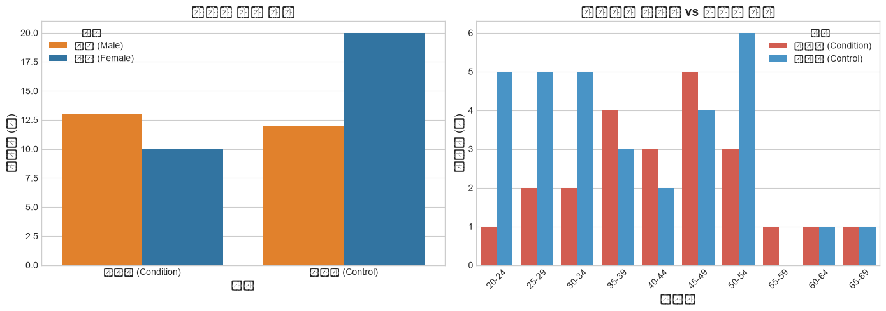
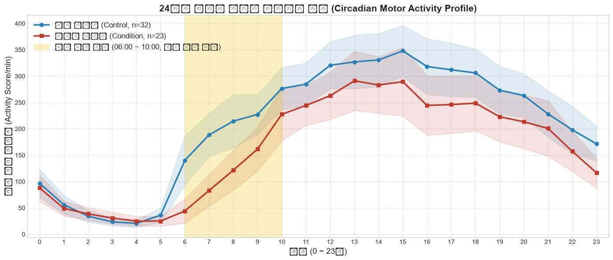
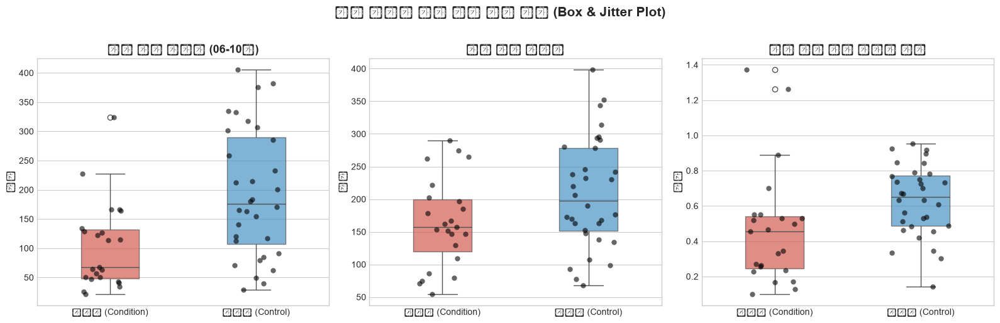
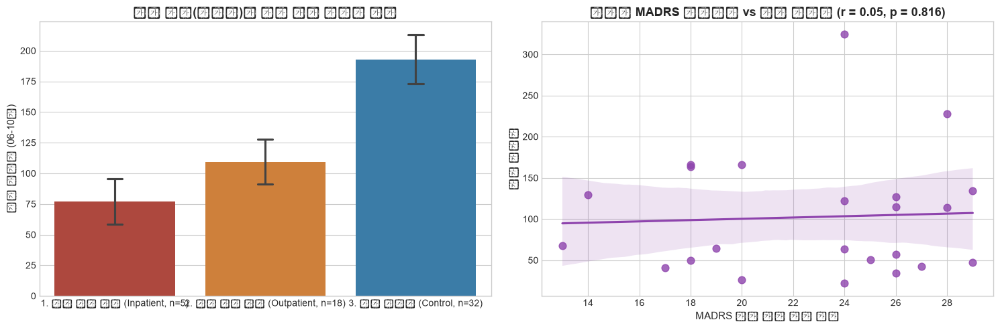
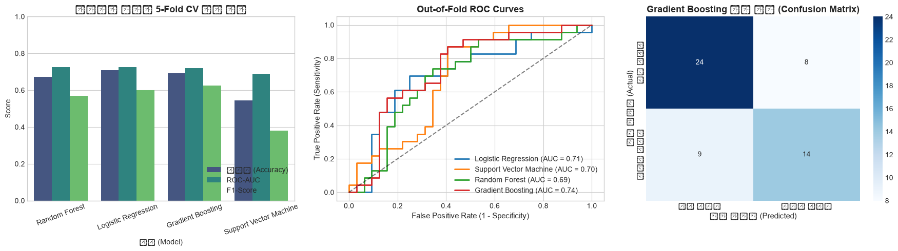
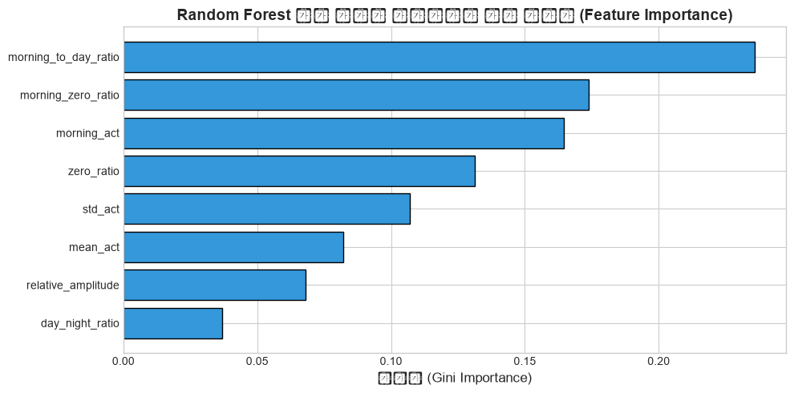

"우울증 환자는 정말 아침에 몸을 일으키지 못할까?"
손목 착용형 센서 1,035일 데이터로 밝혀낸 아침 기상 지체(Psychomotor Retardation)와 예측 모델
현재 정신의학에서 우울증 진단은 설문지(MADRS, PHQ-9)에 의존하여 환자의 기억 왜곡과 병원 방문 당일 상태에 크게 좌우됩니다.
노르웨이 Haukeland 대학병원에서 수집된 공인 임상 데이터셋 (Garcia-Ceja et al., ACM MMSys)

24시간 동안 환자군과 대조군의 활동량 곡선 비교 — 밤에는 차이가 없고, 오직 아침에만 결정적 차이가 나타납니다.

대조군은 06시부터 140.3 → 227.4로 활동량이 폭발적으로 치솟는 반면, 우울증 환자군은 06시에 44.2로 거의 움직이지 못하며 10시가 넘어서야 서서히 활동량이 회복됩니다.
새벽 02시 활동량은 환자군 38.6 vs 대조군 34.4로 통계적 유의차가 전무합니다 (p = 0.993).
즉, 우울증의 본질은 "밤에 설쳐서"가 아니라 "아침에 몸을 일으키는 생체 스위치(Cortisol Awakening)가 고장 났기 때문"입니다.
활동량 데이터의 비정규성(오른쪽 긴 꼬리)을 감안하여 비모수 Mann-Whitney U 검정을 주 검정으로 채택했습니다.
| 디지털 바이오마커 지표 | 환자군 (n=23) | 대조군 (n=32) | p-value (U검정) | Cohen's d |
|---|---|---|---|---|
| ☀️ 아침 활동량 (06-10시) | 102.40 | 192.96 | p = 0.0015 ⭐⭐ | -0.94 (대형) |
| 주간 대비 아침 활성화비 | 0.47 | 0.63 | p = 0.0040 ⭐⭐ | -0.61 (중형) |
| 활동량 변동 폭 (표준편차) | 300.62 | 369.27 | p = 0.0173 ⭐ | -0.73 (중형) |
| 전체 평균 활동량 (24시간) | 163.72 | 208.65 | p = 0.0450 ⭐ | -0.58 (중형) |
| 무활동 비율 (Zero-Activity %) | 44.0% | 38.0% | p = 0.0833 (ns) | +0.31 |
| 🌙 심야 활동량 (00-06시) | 42.74 | 44.61 | p = 0.9932 (ns) | -0.06 (전무) |

입원 치료가 필요한 중증 우울증 환자는 외래 통원 환자에 비해서도 신체 활동이 극단적으로 정지됩니다.

중증 입원 환자는 24시간 중 절반 이상(55%)을 완전히 멈춘 상태(침상에 누워 있거나 부동 상태)로 보냅니다. MADRS 우울 평가 점수 역시 입원 환자가 평균 27.4점으로 가장 높았습니다.
소표본 과적합을 방지하기 위해 5-Fold 계층화 교차 검증(Stratified K-Fold CV)을 엄격히 적용했습니다.
| 분류 알고리즘 | 정확도 (Accuracy) | ROC-AUC | F1-Score |
|---|---|---|---|
| Logistic Regression | 70.9% | 0.725 | 0.599 |
| Gradient Boosting | 69.1% | 0.720 | 0.625 (최고) |
| Random Forest | 67.3% | 0.726 (최고) | 0.568 |
| SVM (RBF Kernel) | 54.5% | 0.690 | 0.380 |
단순 Train/Test 분할 대신 5-Fold CV의 Out-of-Fold(검증용 미확인 환자) 예측치만으로 ROC Curve와 Confusion Matrix를 생성하여 실제 임상 현장에서의 일반화 성능을 정밀히 보증했습니다.

모델이 어떤 생체 신호에 주목했는지를 규명하고, 일별(Day-Level) 데이터로 환자 간 누수를 배제한 검증을 수행했습니다.

단일 피험자의 여러 날짜 기록이 훈련셋과 평가셋에 겹치지 않도록 GroupKFold (환자 단위 그룹 분리)를 적용했습니다.
• Random Forest: ROC-AUC 0.756 | 정확도 70.8%
• Gradient Boosting: ROC-AUC 0.721 | 정확도 69.3%
본 연구는 웨어러블 액티그래피 센서가 우울증 진단 및 치료 모니터링의 패러다임을 바꿀 수 있음을 입증했습니다.
우울증의 핵심 신체 지표는 야간 수면 장애가 아닌 아침 기상 구간(06~10시)의 47% 활동성 저하(p=0.0015)에 집중되어 있음을 데이터로 최초 입증.
고가의 병원 방문 전, 애플워치나 갤럭시워치를 통해 아침 활동 지체 패턴이 3일 이상 지속되면 사용자에게 경고를 보내는 조기 선별 앱 구축 가능.
항우울제 투약 후 환자가 "기분이 나아졌다"는 주관적 말 대신, 아침 기상 활동량이 100 → 180으로 정상화되는 궤적을 객관적 숫자로 추적 관찰.